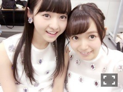
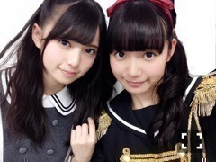
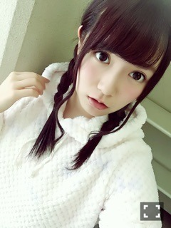

| 2016/11 19 Sat | ひめたん-0o0-その684 |
「個別指導Axis」さんの
広告モデルとして
去年に引き続き撮影に参加しました！
知る人ぞ知る、という
エピソードにはなってしまいますが
私が乃木坂に入る前からお世話になってて
今年も広島で撮影したのですが
中元さんお姉さんになったね～みたいな
まるで親戚の様な空気感でした。
去年は塾構内でほとんど撮ったのですが
今年は終始外ロケでした～
ハタチだけどまだまだ制服頑張るぞ！！
おうちの近くにAxisあるよって方は
是非チェックしてみて下さい( ˇωˇ )
また一緒にお仕事出来て嬉しかったし
もっともっと活躍している姿を
見てもらいたいなと思った一日でした。
ありがとうございました！

私、童顔なんかな？
「ベストヒット歌謡祭2016」
「Rの法則」
ありがとうございました＼(^o^)／
ベストヒット歌謡祭は
乃木坂ちゃんとしては今年で3回目なのかな
本当にありがたいことですね。
私個人としては初めてだったので
出演できたこと光栄でした。
初めてって、発見とか、刺激が多いよね！
そして年末って感じがしてきたぞ！！

そしてRの法則では軽音部として
乃木團呼んで頂きました！！
乃木團～～
乃木團好き～～
個人的には夏のリベンジと思ってましたが
そういえば「失恋したら、顔を洗え！」
テレビ初披露でもあったんですね。
神宮で聴けなかった～という方にも
少しお届けできたのではないかなと。
あとバンドのみんなの「Purple Rain」！

写真はちょっと前だごめんね( ´ ･ω･ ` )
そういえば現メンバーでの集合写真
撮ったことない気がする。
今度演奏する機会があれば撮ろう！！
日曜の夜は、らじらー！サンデー
明日の放送は声優アーツに水瀬いのりさん
乃木坂から若月佑美ちゃんをお迎えします～
前回は名古屋からの中継だったので
1ヶ月振りのスタジオ
なんだか久々な気がする！
メールまだまだお待ちしてます＼(^o^)／
メールテーマの他に
ふつおた、リクエストソングも是非。
おたよりはこちらから～
～お知らせ～
雑誌
11/24 乃木坂46×週刊プレイボーイ2016
12/6 Top Yell
ライブ
12/6 乃木坂46 Merry Xmas Show 2016
12/8 乃木坂46 Merry Xmas Show 2016
TV
11/26 日テレ HALLOWEEN LIVE 2016
12/7 2016FNS歌謡祭
12/14 2016FNS歌謡祭
12/16 堂本兄弟もうすぐクリスマスSP
寒くなってきました、
夏に比べてよく眠れる様になったのは
よいことなんだけれど
なかなかお布団から出られません。
みんなそうだよね！がんばろう！

もこもこ。おやすみ～
(＊´・ω・＊)
コメント(459)
2016/11/19 23:36